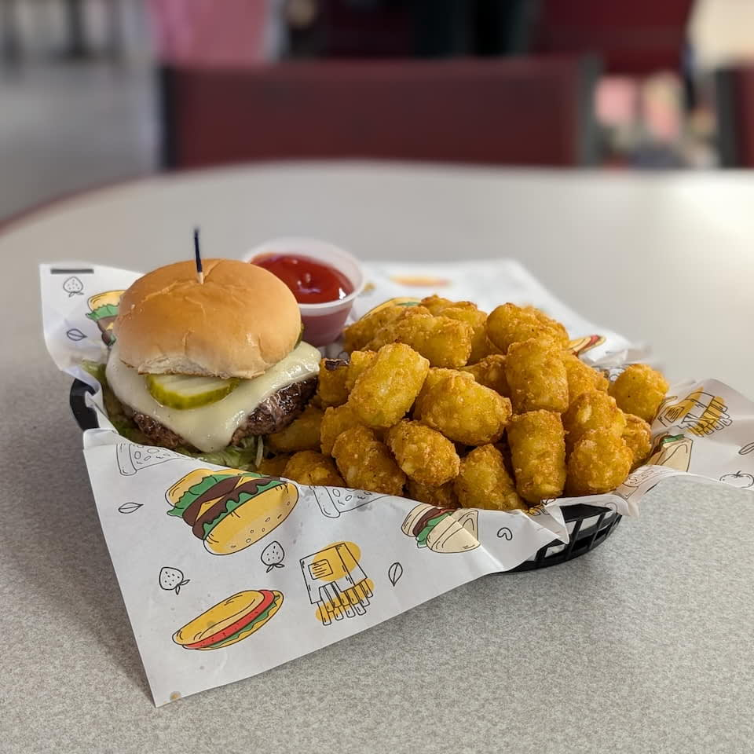
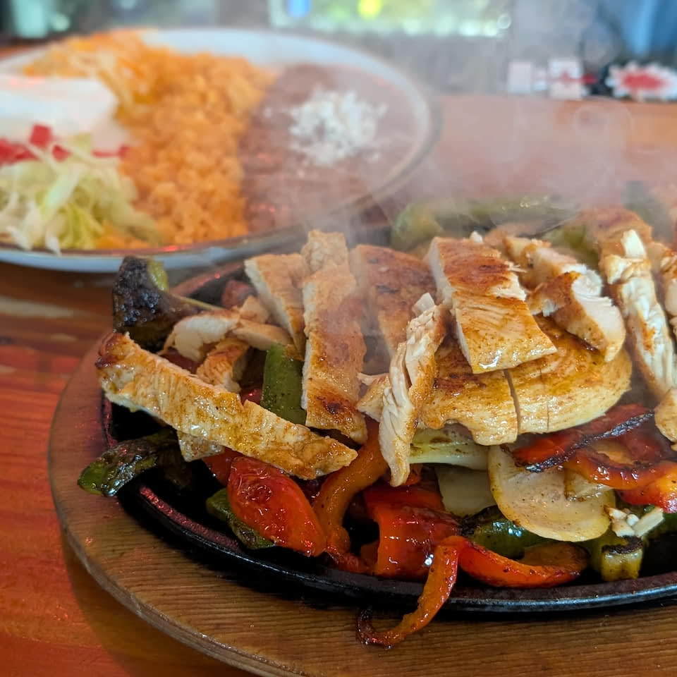

graze barrington
trying the most popular item at every food establishment in great barrington
about
to qualify, a place must:
- sell to the public
- prepare food on site
- offer a savory meal
at the time of writing, this yields approximately 75 places in town.
Bizalion's Fine Food
prosciutto, tomato, mozzarella $15.00
nothing clever to say, just a solid sandwich with good ingredients
return visit? yes
Big Y World Class Market

italian trio sub $6.99
a meaty threesome, tasted like a knock-off sandwich from subway
return visit? no
Berkshire Mountain Bakery

classic signature pizza $13.00
a nice crunchy crust and good flavors, minus ten points since i had to bake it myself
return visit? yes
Barrington Brewery & Restaurant

fish and chips $24.00
my daughter said the chair was uncomfortable, but nevertheless the fish had a nice fry, plus house-brewed beer
return visit? yes
Backstage Grille
classic burger with cheese $13.00
a mound of tots with a side of burger, patty was meh, tots were on point, go for the bowling
return visit? no
Mill River Farmat GB Farmers Market
breakfast burrito $10.00
fine, missing a little something though
return visit? maybe
Bear Butter

buzz bowl $14.00
a bit of everything; sweet, crunchy, salty, tart
return visit? yes
Berkshire Food Coop

turkey bacon avocado $12.99
lightly toasted bread, sprouts and avocado balance out turkey and bacon
return visit? yes
Azteca Taqueria

azteca beef burrito $14.00
literally bursting beef and bean burrito, a tad mealy the meat, decent flavor
return visit? no
Aroma Bar and Grill
chicken tikka masala $21.95
tender chicken, creamy sauce, very orange, lots of rice, but now takeout only
return visit? yes
AFC Sushiat Big Y
marina plate $11.49
adequate grocery store sushi, salmon slightly better than tuna, though i have doubts this is the best-selling item
return visit? no
Agaves
sizzling fajitas $23.00
it sizzled and steamed and was enough for two people
return visit? yes
Aegean Breeze

traditional lamb gyro $17.95
soft pita featuring flat meat, but cohesive flavors
return visit? maybe
A & B Package Variety

turkey club $9.99
standard issue deli turkey club, roll a tad dry
return visit? no
ACE Sushiat Berkshire Food Coop

spicy tuna roll $11.49
adequate grocery store sushi, spicy sauce shines over slighty mushy tuna
return visit? no
Ayakito Japanese Kitchenat GB Farmers Market

tuna and mayo onigiri $5.00
soft and fluffly rice with a little bit of tuna and mayo in the center
return visit? maybe
Great Barrington Little League Snack Bar

slice of cheeze pizza $3.00
I don't think this counts, but I couldn't resist a room temp sllce from Big Y, plus a free kids baseball game
return visit? no
Off The Shelf Farmat GB Farmers Market
all day egg sandwich $8.00
slightly runny egg sandwich with flavorful onion jam and fresh arugula
return visit? yes
Bistro Box

box burger $16.95
juicy burger with big flavor, bacon jam rocks
return visit? yes